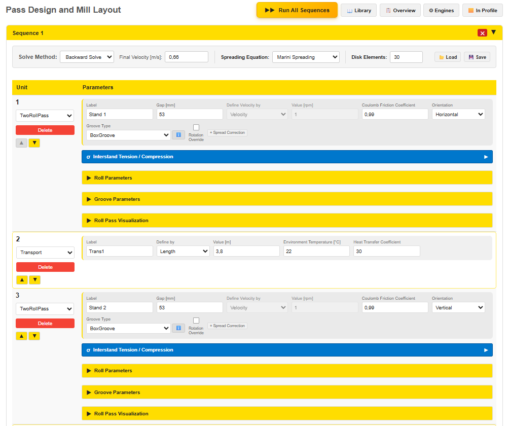
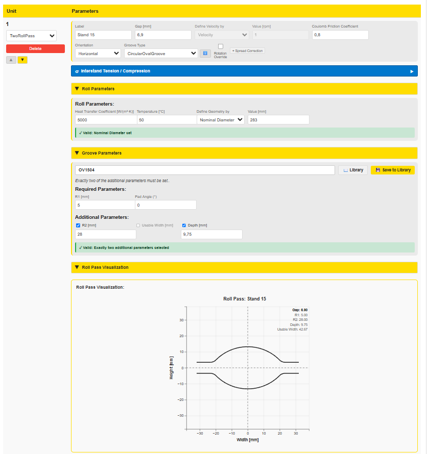
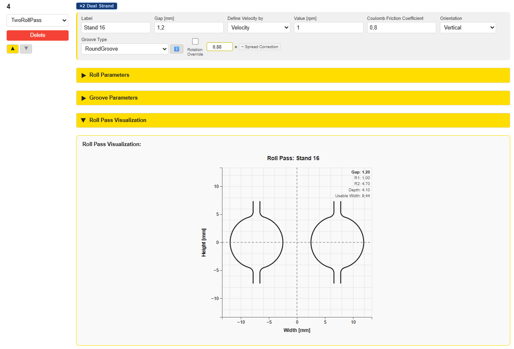
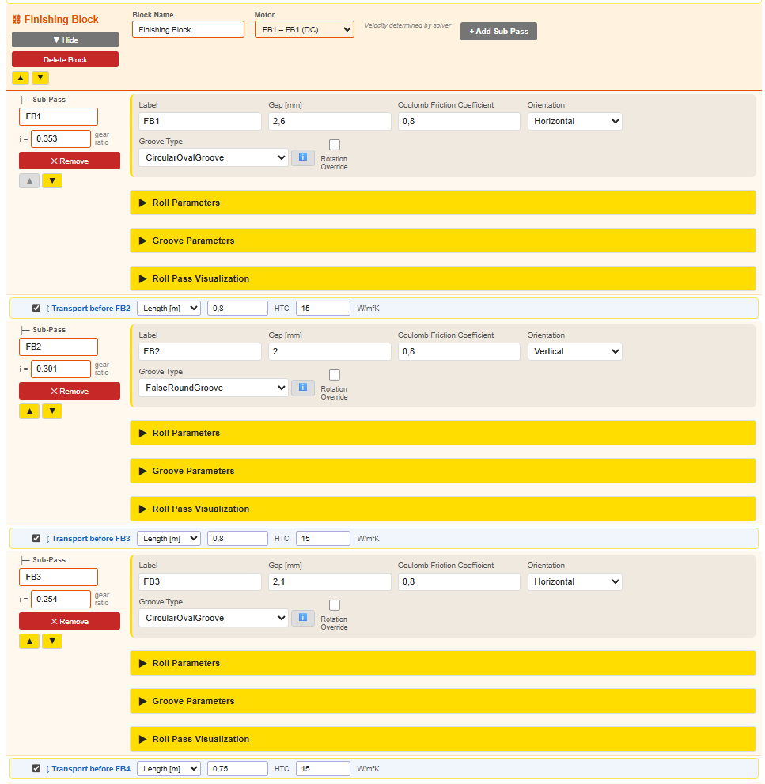
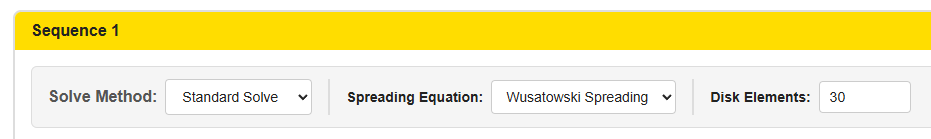

PyRoll GUI | Date: July 2026
The Pass Design tab is the central interface for defining a rolling schedule. A rolling schedule consists of a sequence of units — rolling passes, transport sections, cooling sections, and finishing blocks — that describe the complete path of the workpiece from the initial billet to the finished product.
Each unit in the table represents one processing step. Units are executed in order from top to bottom. The simulation passes the workpiece state (temperature, cross-section geometry, velocity) from one unit to the next.

The Pass Design tab supports any number of sequences. Each sequence is an independent
rolling schedule with its own pass table, solve method, and spreading model.
New sequences are added with the + Add Sequence button; existing sequences can be
collapsed, reordered, or deleted individually.
Multiple sequences enable two important simulation modes:
| Mode | Description |
|---|---|
| Semi-continuous rolling | A multi-strand or tandem mill where different pass groups run at different conditions. Each strand is defined as a separate sequence. |
| Reversing mill | The workpiece passes back and forth through the same stand. Each pass direction is modelled as a separate sequence with a mirrored or identical groove set. |
▶▶ Run All Sequences to solve all sequences in order in a single step.
| Action | Description |
|---|---|
+ Add Pass | Adds a new unit row at the bottom of the schedule. The default type is TwoRollPass. The type can be changed via the type selector in the row. |
Save / Ctrl+S | Saves the current project (pass design + input profile) to a JSON file. |
Open / Ctrl+O | Opens an existing project JSON file. |
📂 Load | Loads a single pass design (one sequence) from the internal Library or from an XML file on disk. Opens a choice dialog first. |
💾 Save (sequence) | Saves the current sequence as a pass design — either to the Library or as an XML file on disk. Opens a choice dialog first. |
Run Simulation | Validates all inputs and starts the PyRolL backend simulation. Results appear in the Pass Results tab. |
Each sequence has its own 📂 Load and 💾 Save buttons. They let you exchange a single pass design
independently of the full project file (Ctrl+S / Ctrl+O), which always includes all sequences and the input profile.
When you click either button a choice dialog appears with two options:
| Option | Description |
|---|---|
| Library | Opens the Pass Design Library modal. You can browse previously saved designs, load one into the current sequence, or save the current sequence under a new name. |
| XML File | Opens the native file dialog. Load reads a .xml pass design file from any directory. Save writes the current sequence to a new .xml file. |
Every unit row in the schedule shows:
The following unit types are available:
| Type | Purpose |
|---|---|
| TwoRollPass | Standard symmetric two-roll pass with a single groove profile |
| ThreeRollPass | Three-roll pass (e.g. Kocks mill) with inscribed circle diameter |
| AsymmetricRollPass | Two-roll pass with different upper and lower groove geometries |
| Transport | Free air transport section between two stands — models air cooling |
| CoolingPipe | Water cooling section — models forced convection cooling in a pipe |
| FinishingBlock | Motor-driven block of multiple mechanically linked roll passes |
| SeparatingGuide | Splits a figure-8 slitting profile into two single-strand half-ovals; models inter-strand transport cooling |
The TwoRollPass is the standard rolling pass. Two rolls with identical groove profiles are arranged symmetrically. The workpiece is reduced and shaped as it passes through the roll gap.

| Field | Unit | Description |
|---|---|---|
Label | — | Unique name for this pass (e.g. Stand 1, Oval 1, Round 2). Used in result charts and tables. Must be unique within the schedule. |
Gap | mm | Distance between the barrel surfaces of the two rolls (i.e. the clearance between the roll bodies outside the groove). A gap of 0 means the roll barrels are touching. |
Define Velocity by | — | Choose whether to specify the roll surface speed directly (Velocity) or via the rotational frequency (Rotational Frequency). |
Value | m/s or 1/s | Numeric value corresponding to the velocity definition selected above. |
Coulomb Friction Coefficient | — | Friction coefficient μ between workpiece and roll surface. Typical values: 0.2–0.4 for hot rolling. |
Orientation | — | Roll axis orientation: horizontal (rolls above/below) or vertical (rolls left/right). |
Rotation Override | ° | Optional additional rotation of the incoming profile before it enters this pass, in degrees. Equivalent to inserting a mechanical rotator between the preceding pass and this one. Positive values rotate counter-clockwise when viewed from the entry side.
Typical use: A value of 45° is used when a square profile from a preceding pass should enter a flat groove on its side (flat-side first) rather than corner-first — which is the case in the classical oval → square → rotated → flat sequence. Without this rotation, PyRolL would compress the corner of the square instead of the flat face. Effect on visualization: The Pass Sequence Visualization shows the incoming profile already in the rotated orientation relative to the roll gap, so it correctly reflects the physical deformation geometry. Leave blank or set to 0 for no rotation (standard case). |
Groove Type | — | Cross-sectional profile of the roll groove. See Section 6 for available types. The i button next to the selector opens a preview panel showing all groove types with their geometric parameters. |
Groove Parameters | mm | Geometry parameters specific to the selected groove type (radii, depths, widths). See Section 6. Use the Library button to load or save a groove directly from the Groove Library. |
Spread Correction | — | Optional per-pass multiplier applied to the out-profile width predicted by the spreading model. Activated with the + Spread Correction button; values > 1.0 increase the predicted spread, values < 1.0 reduce it. Leave inactive (no button) for unmodified spreading model behaviour. See Section 3.4 for details. |
📖 Library button opens the Groove Library modal.
From there you can:
Expanding the Roll Parameters section reveals additional roll-specific settings:
| Field | Unit | Description |
|---|---|---|
Roll Diameter / Radius | mm | Nominal diameter or radius of the roll body (selectable). |
Roll Temperature | °C | Surface temperature of the rolls. Used in heat transfer calculations. |
Roll Heat Transfer Coefficient | W/(m²·K) | Heat transfer coefficient between workpiece and roll surface. Controls the rate of heat conduction from the hot workpiece into the roll during the pass. |
The Roll Pass Visualization panel shows a 2D cross-section of the groove caliber overlaid with the incoming workpiece profile. This allows quick visual verification that the groove fits the incoming cross-section without overfilling.
Note: In the Pass Design view, only the groove caliber outline is displayed — without the incoming workpiece profile. The full visualization including the workpiece cross-section overlay is available after running the simulation in the Roll Pass Plots and Overall Plots.
The + Spread Correction button adds a per-pass correction multiplier to the width predicted by the spreading model. This is useful for special groove geometries — such as slitting passes or figure-8 calibers — where the standard spreading model systematically under- or overestimates the lateral spread.
Clicking + Spread Correction shows an inline input field to the right of the Rotation Override field. The value is a multiplier applied to the spreading model’s out-profile width:
| Value | Effect |
|---|---|
1.000 | No correction — spreading model result used as-is (default) |
> 1.0 | Increases the predicted out-profile width (e.g. 1.05 = +5 %) |
< 1.0 | Reduces the predicted out-profile width (e.g. 0.95 = −5 %) |
Remove the correction with the − Spread Correction button to return to unmodified spreading model behaviour.
When a SeparatingGuide unit precedes one or more TwoRollPass stands in the sequence, those subsequent passes automatically receive a ×2 Dual Strand badge to indicate that two identical strands are being rolled in parallel.

The ThreeRollPass represents a three-roll mill stand (e.g. Kocks or PSW mill) where three rolls are arranged at 120° intervals around the workpiece.
| Field | Unit | Description |
|---|---|---|
Label | — | Unique identifier for this pass. |
Inscribed Circle Diameter (ICD) | mm | Diameter of the circle inscribed in the three roll grooves or flat rolls. Defines the target output cross-section size. |
Define Velocity by | — | Surface velocity or rotational frequency (same as TwoRollPass). |
Coulomb Friction Coefficient | — | Friction coefficient μ. |
Orientation | — | Y = one roll pointing up; AntiY = one roll pointing down. |
Groove Type | — | Groove profile (subset of types — round-type grooves typically used). |
An AsymmetricRollPass uses two rolls with different groove geometries
(upper and lower). A common example is a pass where one roll has a shaped groove (e.g.
SplineGroove) and the other is flat (FlatGroove).
For details on the simulation method, see the dedicated help page: Asymmetric Roll Pass – Method & Results.
The SeparatingGuide unit models the physical separation of a figure-8 (slitting) profile into two individual single-strand profiles. It is placed immediately after a slitting TwoRollPass and before the first post-separation oval or round pass.
Physically, the guide splits the two connected strands at the slitting neck and directs them into separate calibers. It also models thermal cooling during this transport section.
| Field | Unit | Description |
|---|---|---|
Label | — | Unique name for this unit (e.g. Separating Guide). |
Define by | — | Whether to specify the guide section by length (metres) or duration (seconds). |
Value | m or s | Length or duration of the guide section. |
Environment Temperature | °C | Ambient temperature used for radiation heat loss calculation. |
Heat Transfer Coefficient | W/(m²·K) | Convective heat transfer coefficient between the workpiece surface and surrounding air. |
The SeparatingGuide automatically splits the incoming figure-8 cross-section at x = 0 (the vertical plane through the slitting neck). The resulting half-oval is centered at x = 0 so that it aligns correctly with the symmetric roll groove of the following oval or round pass. The thermal state (temperature, strain) is carried over from the slitting pass output.
A Transport unit models the free transport of the workpiece between two stands — for example, on a roller table or a runout table exposed to ambient air. During transport, the workpiece loses heat to the surrounding environment.
| Field | Unit | Description |
|---|---|---|
Label | — | Unique name for this transport section. |
Define by | — | Specify the transport section by physical length (m) or elapsed duration (s). |
Value | m or s | Numeric value corresponding to the definition selected above. |
Environment Temperature | °C | Ambient air temperature surrounding the workpiece. Typical value: 20 °C. |
Heat Transfer Coefficient | W/(m²·K) | Convective heat transfer coefficient between the workpiece surface and the environment. Typical range for free air convection during hot rolling: 10–30 W/(m²·K). |
PyRolL models the temperature evolution during transport using Newton's law of cooling. The surface heat flux \( q \) is:
where \(\alpha\) = heat_transfer_coefficient [W/(m²·K)],
\(T_\text{surface}\) = workpiece surface temperature,
\(T_\text{environment}\) = environment_temperature.
If Define by length is selected, the transit time is internally derived from the exit velocity of the preceding roll pass and the specified length. If Define by duration is selected, the transit time is used directly.
A CoolingPipe unit models a controlled water cooling section, such as a water box or quench station. The workpiece passes through a pipe with flowing coolant, resulting in significantly stronger heat extraction than free-air transport.
| Field | Unit | Description |
|---|---|---|
Label | — | Unique name for this cooling section. |
Define by | — | Specify by length (m) or duration (s) — same logic as Transport. |
Value | m or s | Length or duration of the cooling section. |
Inner Radius | mm | Inner radius of the cooling pipe. Determines the annular gap between pipe wall and workpiece. |
Coolant Temperature | °C | Inlet temperature of the cooling water. Typical value: 15–25 °C. |
Coolant Volume Flux | m³/s | Volumetric flow rate of the cooling water through the pipe. Controls the intensity of forced convection. |
Unlike a Transport unit (air cooling, low heat extraction), a CoolingPipe uses forced convection with water, resulting in heat transfer coefficients typically 1–3 orders of magnitude higher. This is relevant for controlled cooling of wire rod and bar products after the finishing block.
A FinishingBlock is a mechanically coupled group of roll passes driven by a single motor. All sub-passes within the block are kinematically linked: the roll surface velocity of each sub-pass is determined by the shared motor RPM and the individual gear ratio of each stand.

| Field | Unit | Description |
|---|---|---|
Block Name | — | Label for the entire finishing block (e.g. Finishing Block). |
Motor | — | Selection of the drive motor from the motor library. Determines the available power and maximum torque. |
Motor RPM | rpm | Rotational speed of the drive motor. This single value controls the velocity of all sub-passes through their respective gear ratios. |
Each sub-pass within the FinishingBlock is a TwoRollPass with the following differences:
Gear Ratio field per sub-pass| Field | Unit | Description |
|---|---|---|
Label | — | Unique name for this sub-pass (auto-generated as FB1, FB2, …) |
Gear Ratio | — | Transmission ratio \(i\) between motor shaft and this roll stand. The rotational frequency at the rolls is \(f = n_\text{motor} / (i \cdot 60)\). |
Gap | mm | Distance between the barrel surfaces of the two rolls. |
Groove Type / Parameters | —/mm | Same as for a standalone TwoRollPass (see Section 3). |
The roll surface velocity for each sub-pass is computed as:
where \(n_\text{motor}\) = motor RPM, \(i\) = gear ratio, \(r_\text{roll}\) = roll radius [m].
The displayed rotational frequency (shown in the UI next to each gear ratio input) is: \(f = n_\text{motor} / (i \cdot 60)\) [1/s].
Note: The GUI additionally computes and displays the inter-stand tension / compression stress between consecutive sub-passes within the FinishingBlock, based on the resulting velocity and cross-section profile.
Between sub-passes inside a FinishingBlock, optional Transport-between elements (shown with a yellow border in the UI) can be added to model short transport sections between individual stands within the block — for example, a short air gap or guide tube. These follow the same logic as standalone Transport units (see Section 6).
A groove profile defines the cross-sectional shape of the roll caliber. The groove type is selected per roll pass; the parameters (radii, depths, widths) depend on the selected type. All groove dimensions are specified in mm.


A FlatGroove has a perfectly flat bottom (no curvature). It is used for flat rolling passes
or as one side of an asymmetric roll pass (see Section 5). Only the groove width is specified.
A SplineGroove is a custom free-form groove defined by a set of
control points. This type is used when none of the standard geometric profiles accurately
represents the actual roll caliber. The control points are entered as a list of
(y, z) coordinate pairs describing the groove contour.
A variant of the CircularOvalGroove with an additional constriction
(reduced width at the groove exit plane), used to improve material confinement.
No separate SVG is available; the shape is similar to CircularOvalGroove with
narrower flanks.
The Solve Method defines how PyRolL distributes and iterates the velocities across the pass schedule. The selector is located in the toolbar area above the pass table, next to the Run Simulation button.
| Method | Description | Additional Input |
|---|---|---|
| Standard Solve | PyRolL's default solver. The workpiece is processed sequentially pass by pass.
Velocities are determined implicitly by the continuity equation and the roll surface speed
of each pass. No additional parameters required. Note: The GUI additionally computes and displays the inter-stand tension / compression stress between consecutive passes based on the resulting velocity and cross-section profile. |
— |
| Forward Solve | The simulation starts from a known entry velocity at the first pass. All subsequent pass velocities are computed forward using mass continuity. Useful when the inlet speed is known (e.g. from a roughing mill exit). | Initial Velocity [m/s] |
| Backward Solve | The simulation works backwards from a defined exit condition — the target final velocity. PyRolL adjusts the entire velocity profile so that the last pass exits at the specified speed. The final cross-section area is determined automatically from the schedule geometry. | Final Velocity [m/s] |
All three methods respect the law of mass continuity between passes:
where \(v\) = workpiece velocity [m/s] and \(A\) = cross-section area [m²] at the exit of passes 1 and 2 respectively.
For Forward Solve and Backward Solve, every roll pass in the
schedule must have a positive velocity seed value (> 0). This allows the solver
to establish the velocity ratios between stands before iteration. A value of
1 m/s is sufficient as a seed — the solver will scale it automatically.
The Disk Element Count controls how finely PyRolL subdivides each pass in the rolling direction for the thermal and mechanical computation. The roll bite is divided into n equally spaced disk elements; the thermal ring model solves the heat equation at each disk position. The setting is located in the sequence header toolbar, next to the Spreading Equation selector.

| Value | Effect | Typical use |
|---|---|---|
| 5 – 10 | Very fast; coarse temperature / stress distribution along the bite | Quick parameter studies, large reduction passes with slow convergence |
| 15 – 20 | Good balance between speed and accuracy | Iterative calibration, multi-sequence schedules |
| 30 | Default — high spatial resolution; noticeable computation time per pass | Final validation simulations, accuracy-critical results |
| 50+ | Maximum resolution; significantly longer computation time | Research / publication; thermal gradient studies |
Lateral spreading describes the increase in workpiece width during rolling caused by material flowing sideways (in addition to elongation). PyRolL GUI offers six empirical spreading models, selectable in the toolbar area of the Pass Design tab.
The Wusatowski model (1969) is the default spreading model. It describes lateral spreading through an empirical power law based on the reduction ratio and groove geometry:
where \(b_0, b_1\) = workpiece width before/after the pass, \(h_0, h_1\) = height before/after, \(\psi\) = Wusatowski exponent (function of roll diameter, workpiece dimensions and reduction), and \(a_T, a_v, a_M, a_f\) = correction factors for temperature, velocity, material, friction.
The exponent \(\psi\) is determined empirically and accounts for roll diameter, initial dimensions, and the degree of reduction. Wusatowski is well-suited for conventional groove rolling (oval, round, box sequences).
The Marini model (1979) extends the power-law approach with additional consideration of the groove caliber geometry. It provides improved accuracy for passes with strong lateral confinement (e.g. box and diamond grooves) where the groove walls actively constrain the spreading.
The core of the Marini model is the first Marini parameter:
where \(\Delta h_{eq}\) = equivalent height reduction, \(\mu\) = Coulomb friction coefficient, \(R\) = working roll radius.
The Hill model is based on the analytical theory of plasticity (R. Hill, 1950) and derives spreading from the plane-strain deformation assumption. It is less empirical than Wusatowski and Marini, but typically gives good results for flat and near-flat passes where the plane-strain assumption is approximately valid.
The Roux model (1976) takes a fundamentally different approach: instead of a simple power law, it computes a spread coefficient from two intermediate parameters derived from the equivalent height/width dimensions of the incoming profile.
First Roux parameter:
\(a = \left(1 + 5\left(0.35 - \dfrac{\Delta h_{eq}}{h_{eq,0}}\right)^{\!2}\right)\sqrt{\dfrac{h_{eq,0}}{\Delta h_{eq}} - 1}\)
Second Roux parameter:
\(b = \left(\dfrac{b_{eq,0}}{h_{eq,0}} - 1\right)\)
Spread factor \(F_2\):
\(F_2 = \dfrac{1}{\left(1 - \dfrac{\Delta h_{eq}}{h_{eq,0}}\right) + \dfrac{3a}{\left(\dfrac{2R}{h_{eq,0}}\right)^{3/4}}}\)
Profile factor \(F_3\):
\(F_3 = \dfrac{b_{eq,0}/h_{eq,0}}{1 + 0.57\,b}\)
where \(h_{eq,0}, b_{eq,0}\) = equivalent height / width of incoming profile,
\(\Delta h_{eq}\) = equivalent height reduction, \(R\) = working roll radius.
Then \(b_1 = \eta \cdot b_0\).
Roux is the only available model that computes both the spread coefficient and the width output from a physically motivated derivation without correction factors for velocity, temperature or material — making it independent of those parameters in its default implementation.
The Sander model shares the same general power-law structure as Wusatowski but uses a different exponent formula that explicitly accounts for the ratio of workpiece width to contact arc length:
Sander exponent:
\(\psi_S = 10^{\,-0.76\,\left(\frac{b_{eq}}{h_{eq}}\right)^{0.39}\,\left(\frac{b_{eq}}{\sqrt{R\,\Delta h_{eq}}}\right)^{0.12}\,\left(\frac{b_{eq}}{R}\right)^{0.59}}\)
The Sander exponent grows more sensitive to the relative workpiece width (\(b/h\) ratio) and the roll-contact geometry compared to Wusatowski, making it particularly suited to wider workpieces and flat passes with large width-to-height ratios.
The Sparling model also adopts the Wusatowski-style power law but introduces a distinctive exponential exponent formula that captures the interaction between workpiece width, roll radius, and height reduction:
Sparling exponent:
\(\psi_{Sp} = 0.981 \cdot \exp\!\left(-0.6735 \cdot \dfrac{2.395\,b_{eq}^{\,0.9}}{R^{0.55}\,h_{eq}^{\,0.1}\,|\Delta h|^{0.25}}\right)\)
where \(a_T\) = temperature factor, \(a_{\dot\varepsilon}\) = strain-rate factor,
\(a_M\) = material factor, \(a_{rs}\) = roll surface factor, \(a_{bs}\) = bar surface factor.
All default to 1 in the standard implementation.
The exponential form makes the Sparling exponent particularly sensitive to the relative width \(b_{eq}/\sqrt{R \cdot |\Delta h|}\) — a dimensionless measure of the deformation zone geometry. At moderate reductions the Sparling model tends to predict lower spread than Wusatowski; at high reductions it may predict higher spread.
| Model | Best suited for | Friction effect | Velocity effect | Notes |
|---|---|---|---|---|
| Wusatowski | General groove rolling (oval/round sequences, box groove) | None (internal constant \(a_f=1\)) | Yes — correction factor \(a_v(v,\varepsilon)\) | Default; most commonly validated model in long product rolling |
| Marini | Passes with strong groove confinement (box, diamond) | Strong — \(\mu\) in denominator of \(a\) | None | Better captures constrained spreading in deep grooves; requires realistic μ value |
| Hill | Flat and near-flat passes | Indirect (via friction in force/torque) | None | Analytically derived; less accurate for profiled grooves |
| Roux | Wide workpieces; cases where velocity/temperature data is uncertain | None | None | Physics-motivated derivation; no empirical correction factors; unique two-parameter structure |
| Sander | Wide flat passes, workpieces with large \(b/h\) ratio | None (constant \(a_f=1\)) | Yes — at \(v \le 60\) m/s | Exponent more sensitive to width-to-contact-arc ratio than Wusatowski |
| Sparling | High-reduction passes; comparison / validation studies | None (default) | None (default) | Exponential exponent form; sensitive to \(b/\sqrt{R\,|\Delta h|}\); tends to diverge from Wusatowski at extreme reductions |
Every unit in the schedule must have a unique label. Duplicate labels cause a validation error before the simulation starts. The error message shows which labels are duplicated.
When using the Forward/Backward solve method, every roll pass must have a velocity value greater than zero. A velocity of 0 will prevent the solver from converging.
The Roll Temperature field in the roll parameters must always be filled in.
Leaving it empty causes a validation error. Typical roll temperatures in hot rolling:
60–150 °C depending on cooling intensity and stand sequence.
If Define by length is chosen for a Transport unit, the simulation requires the exit velocity from the preceding roll pass to compute the transit time. Ensure the preceding pass has a valid velocity. If no preceding roll pass exists (e.g., the first unit is a Transport), use Define by duration instead.
A gear ratio \(i > 1\) means the roll rotates slower than the motor; \(i < 1\) means faster. For a typical finishing block with increasing roll speed from stand to stand (to compensate for cross-section reduction), gear ratios decrease from the first to the last sub-pass.
Michael Molter | PyRoll GUI — Pass Design Guide | July 2026